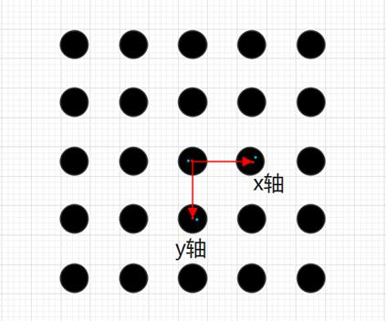

|
类型 |
标定 |
|
描述 |
从输入点集中选择一个基准坐标系（由3点构成），基准是一个世界坐标系，描述了这个世界坐标系在图像中的位姿。 若输入基准为空即输入基准矩阵行数为0，则从输入点集中自动选取一个默认的基准作为输出基准。若输入基准不为空，则在输入基准的坐标轴点附近相应地选取三个点作为输出基准。 选择方式：根据输入坐标系点在输入点集中去对点，原点对原点，x轴点对x轴点，y轴点对y轴点，最终选择离这3点分别最近的3点作为输出基准坐标系。建议原点、x轴点、y轴点为构成直角坐标系的的相邻三点
注：输入基准的坐标轴点与点集中的坐标误差不能偏离过大，5个像素内 |
|
语法 |
ZV_CalGetBase(pptsIn,baseIn,baseOut)
参数： pptsIn：ZVOBJECT类型，输入的像素坐标点集，单通道nx2矩阵 baseIn：ZVOBJECT类型，输入坐标系，单通道3x2矩阵，分别为原点，x轴点，y轴点，均大于0 baseOut：ZVOBJECT类型，输出基准坐标系，单通道3x2矩阵，分别为原点，x轴点，y轴点 如下图所示：  上图蓝色点为输入3点，红色点为选择的输出基准坐标系 |
|
适用控制器 |
支持ZV功能或者5系列以上的控制器 |
|
例子 |
ZVOBJECT img,pts,base_in,base_out ZV_ImgRead(img,"tool3.jpg",0) '读取图片 ZV_CalGetScaPoints(img,pts,128,0,500,5000) '提取标定板圆心坐标
TABLE(0,361,362,482,362,361,482) '写入输入坐标系数据 ZV_MatGenData(base_in,3,2,0) '生成输入坐标系矩阵 ZV_CalGetBase(pts,base_in,base_out) '获取基准坐标系 ZV_MatGetRow(base_out,0,2,0) '获取基准坐标系原点位置 ?"基准坐标系原点位置:",TABLE(0),TABLE(1) |